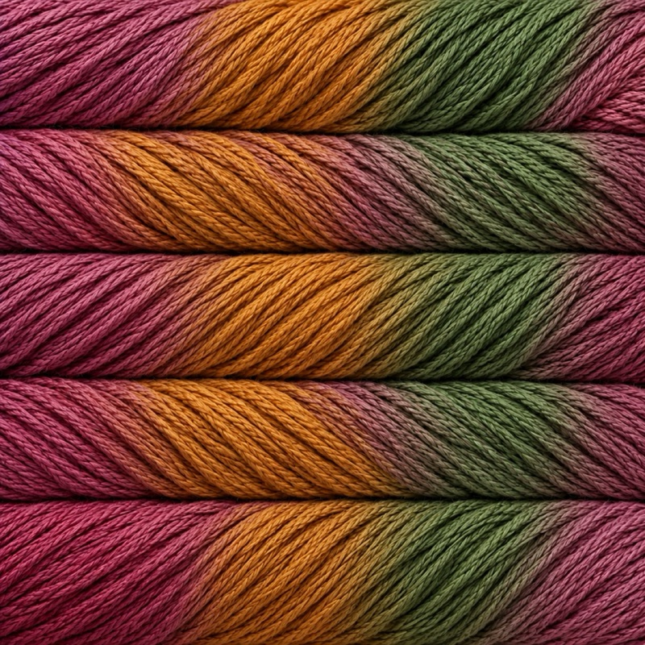
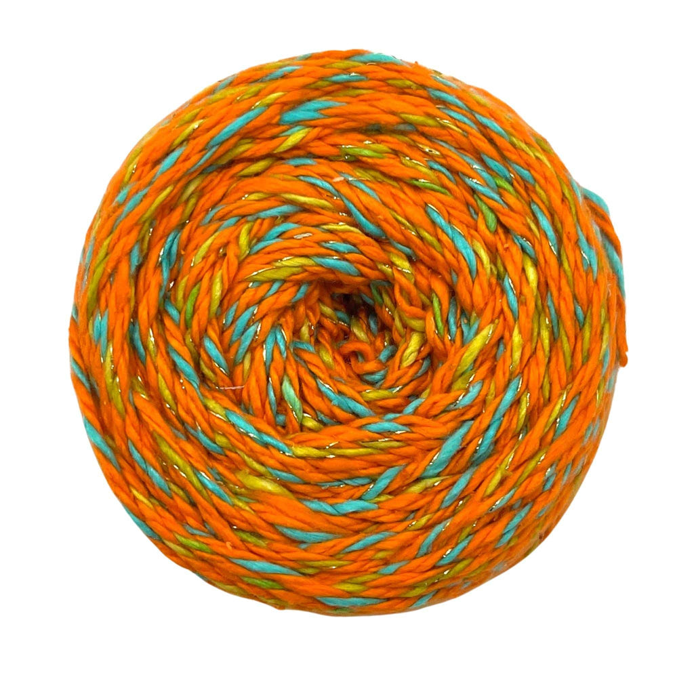
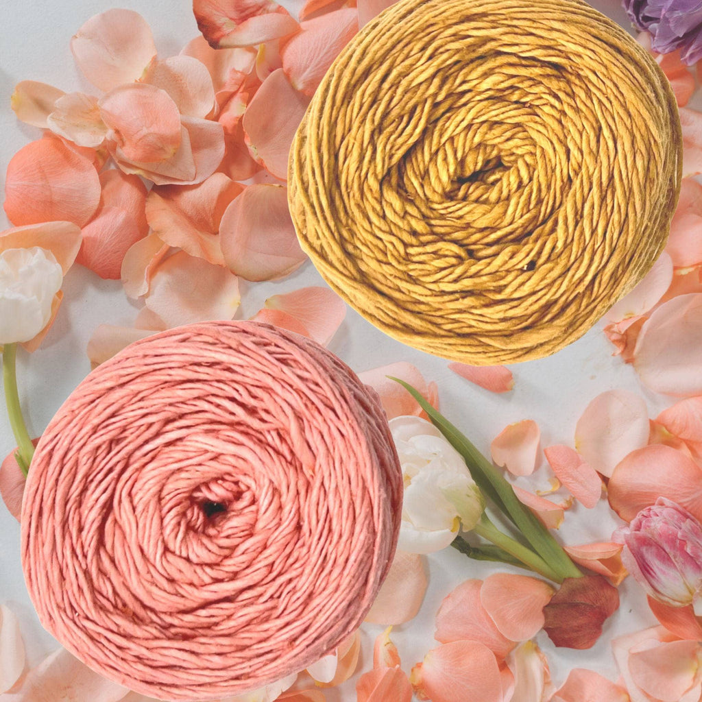

Darn Good Yarn DK Weight Recycled Silk Yarn - Coneflower
DK-weight reclaimed silk yarn, hand-dyed in the Coneflower colorway.
View official product ↗COLOR • FIBER • POSSIBILITY
A focused edit of recycled silk yarns, with a project planner that keeps yardage assumptions visible.

Three real references. Confirm options, prices and availability at the official store.
DK-weight reclaimed silk yarn, hand-dyed in the Coneflower colorway.
View official product ↗
Three-ply recycled silk yarn; the listing specifies 110 yards per 50 g.
View official product ↗
DK-weight silk yarn colored with plant-based dyes; the listing notes natural variation.
View official product ↗YOUR LOCAL SHORTLIST
Your selection stays in this browser. It does not reserve products or submit orders.
The selected yarn listings are DK-weight recycled silk products.
The official store offers knitting and crochet kits as well as yarn.
Yarn quantities depend on the pattern and gauge; this planner uses values supplied by the maker.